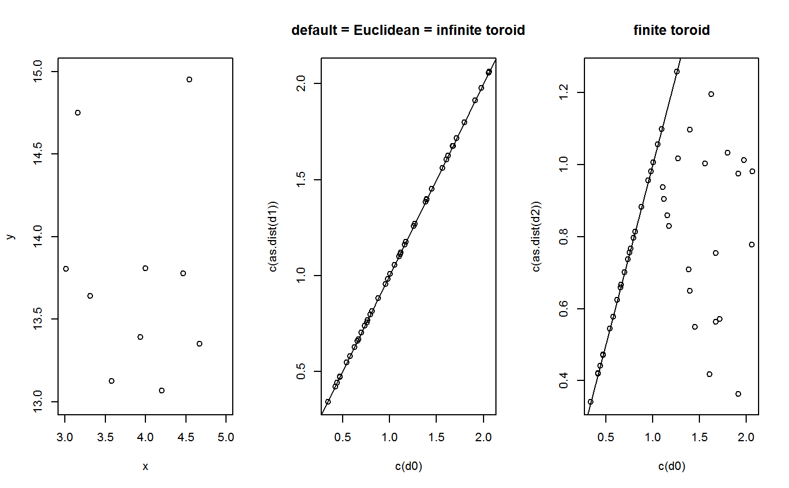

R/dist_in_torus.R
dist_in_torus.RdBy default (i.e. if the arguments lower and upper are not provided), this
function returns the distance in the Euclidean space by assuming borders
infinitely apart (i.e. points in a small portion of an infinitely large
toroid).
The shortest distance in the toroid is the hypotenuse of the smallest hyper-triangle. The 'internal' distance is the typical distance based on the coordinates, as in the Euclidean space. The 'external' distance is crossing borders, going around. There are only two ways of measuring distance along each dimension.
dist_in_torus(x, lower = rep(-Inf, ncol(x)), upper = rep(Inf, ncol(x)))
| x | A numeric matrix giving the coordinates (positions) of the points. |
|---|---|
| lower, upper | Numeric vectors of length |
A numeric matrix.
numeric_vector <- c(runif(10, min = 3, max = 5), runif(10, min = 13, max = 15)) x <- matrix(numeric_vector, ncol = 2) # Euclidean distances d0 <- dist(x) # default behaviour d1 <- dist_in_torus(x) # distances in the toroid d2 <- dist_in_torus(x, lower = c(3, 13), upper = c(5, 15)) par(mfrow = c(1, 3)) plot(x, xlim = c(3, 5), ylim = c(13, 15), xlab = "x", ylab = "y") plot(c(d0), c(as.dist(d1)), main = "default = Euclidean = infinite toroid") abline(0, 1) plot(c(d0), c(as.dist(d2)), main = "finite toroid")abline(0, 1)# `upper` and `lower` must be as long as `ncol(x)` x <- matrix(runif(9), ncol = 3) dist_in_torus(x, lower = c(0, 0, 0), upper = c(1, 1, 1))#> [,1] [,2] [,3] #> [1,] 0.000 0.653 0.729 #> [2,] 0.653 0.000 0.296 #> [3,] 0.729 0.296 0.000